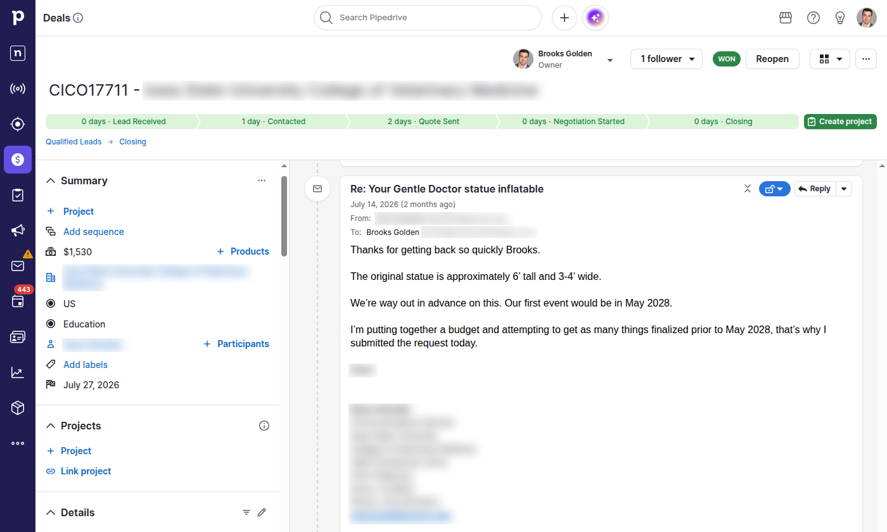
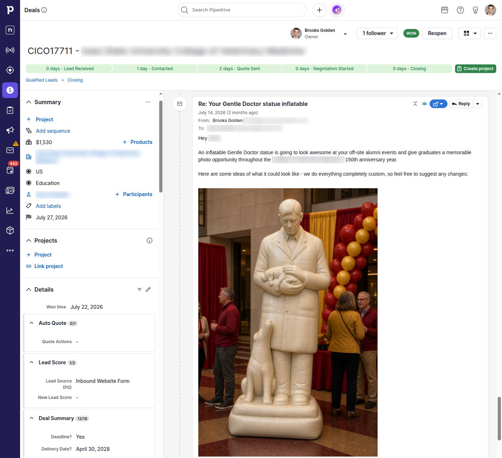
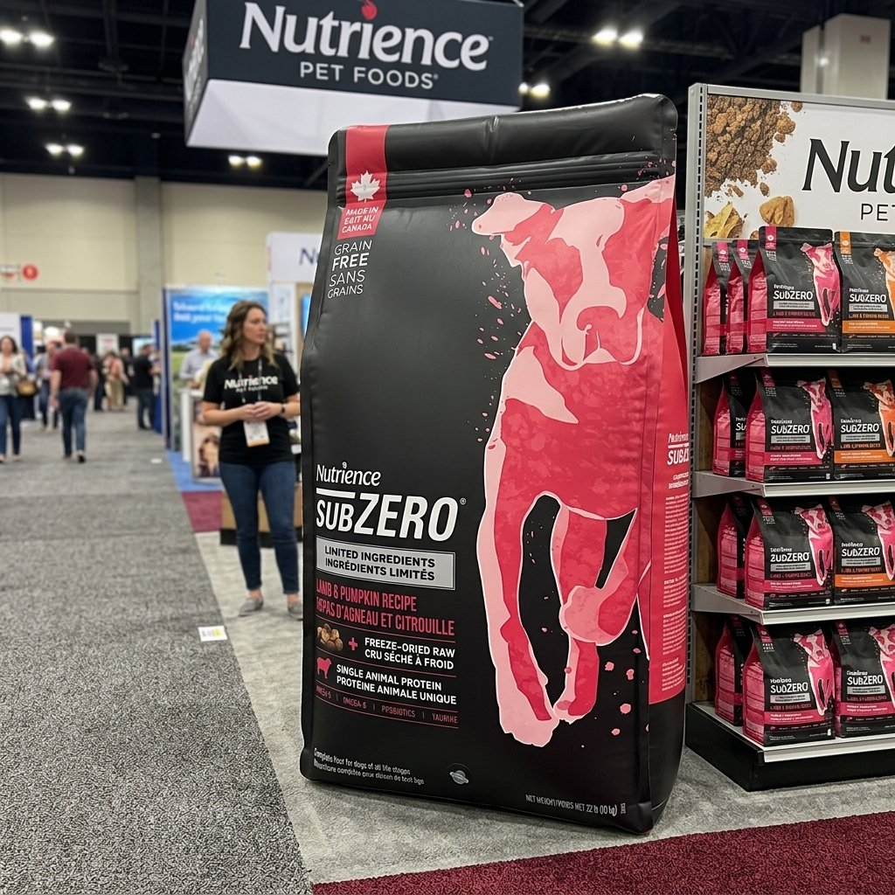
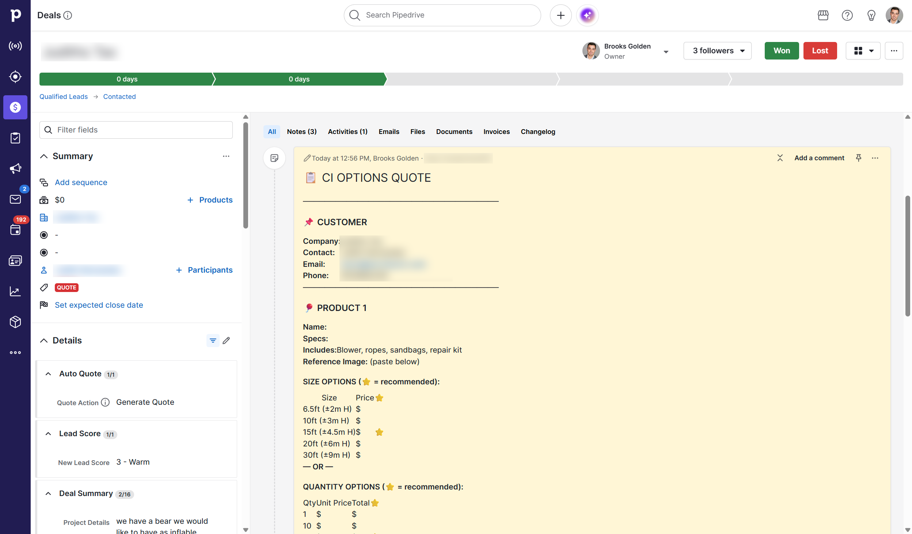
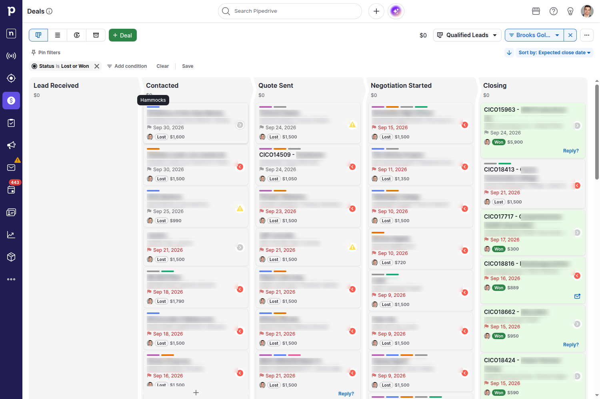
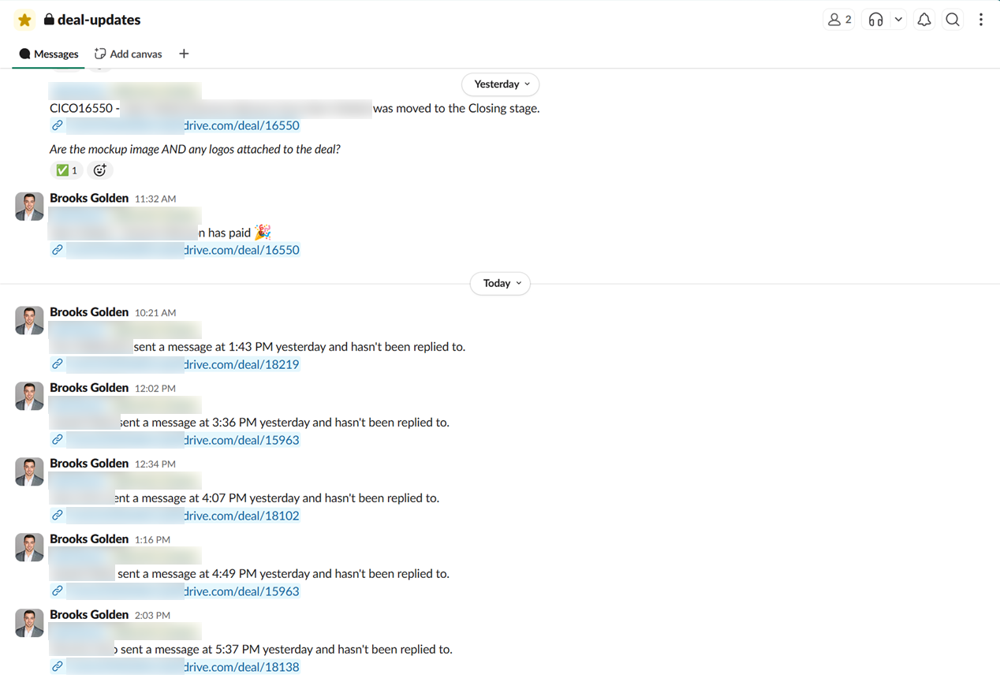
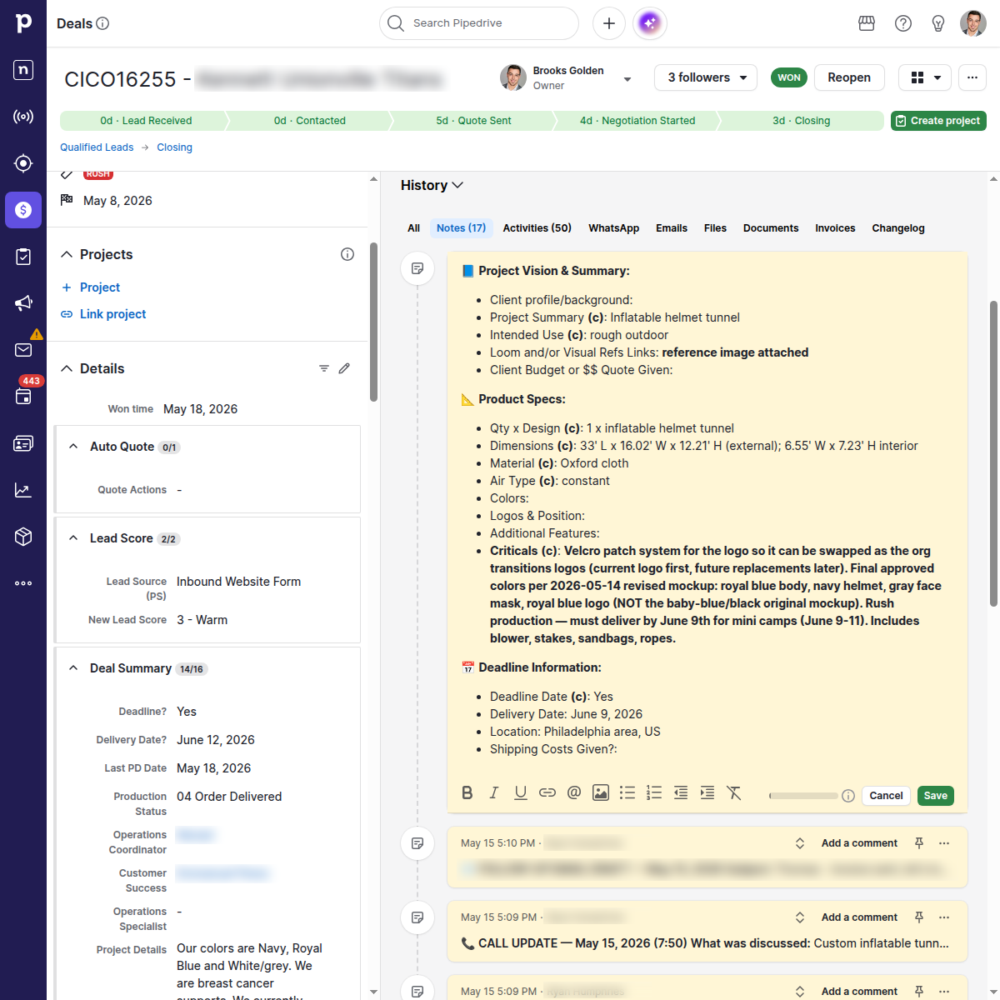

Conversion, ranked #1 of 17 active reps
Sales enablement project · Custom manufacturing · 2026
A sales process rebuilt
with AI.
Brooks’s process reduced a roughly 10-hour sales workday to 4–8 hours. The CRM account running that process ranked #1 for conversion on the company’s active-rep leaderboard.
The client: an eight-figure marketing supply company that manufactures custom promotional inflatables. The work connected the first reply, the product concept, the quote, the next call and the production handoff.
Daily work, down from roughly 10 hours in busy season
189 replies from 388 emails classified as first responses
The results
Less administration.
Strong sales performance.
The process developed inside a live sales operation.

Monthly new-lead conversion
Company reporting · February–August 2026The connected workflow
Each automation removed a different obstacle.
01
First responses that start a conversation
The system drafted replies using each customer’s project details, ready for review while the inquiry was fresh.
July email archive59.3%
73 replies from 123 first-response emails.
Brooks estimates the earlier reply rate was 10–20%.<5 minFirst-response target
<1 minMost first responses, as reported by Brooks
Overnight leads were released in the morning.
The customer’s reply, inside Pipedrive
“Thanks for getting back so quickly Brooks.”

July 14Customer replies to the first response.
July 15Customer selects concept #3 and asks for a quote.
July 22Customer requests the 6-foot version and add-ons.
02
Product images the customer can respond to
The workflow put project-specific copy and product images into Pipedrive for the salesperson to review.
One documented customer journeyConcept #3
Chosen the next day. A week later, the customer asked about a six-foot version and add-ons.
The statue email is from this deal; the arch is a separate example.The sent email, with the concepts still inside it

What made the images useful
Realistic concepts customers could react to.
Brooks reports that images prompted more replies and design feedback. Some buyers wanted to see the product before deciding.
- Use the real request. Check the transcript, deal and references.
- Keep the design accurate. Match size, shape, colors and logo placement.
- Show buildable details. Use realistic materials and seams, with fine detail printed on the surface.
- Review before sending. A concept still needs human approval.
See two more concepts from the archive


Separate projects; generated concepts, not delivered products.
03
Quotes prepared automatically, then reviewed
Call requirements became a quote draft for the salesperson to revise before sending.
Before · Manual preparation10–15 min
Recall the call and fill the quote line by line.
After · Review and editing1–3 min
Review the automatically prepared quote and make revisions.
About 7–14 minutes less hands-on work per quote, based on Brooks’s estimates.


Supporting the quote workflow
A searchable quote library
Past quotes were searchable by product, material, quote type and deal. A separate photo catalog made relevant examples easy to find.
Archived quote index378
Records attributed to Brooks or Quote Automation.
Includes revisions, not 378 unique customers.
04
Follow-up that keeps every deal visible
CRM labels and reminders made the next call, reply or quote review visible across a busy pipeline. Brooks reports that deals stopped falling through the cracks after rollout.
Typical active pipeline50–80 deals
Follow-up without relying on memory.
Brooks estimates 1–3 potential wins per month were missed before rollout.Pipeline labels show the next action
Hammocks: a draft is ready for review.

The action behind the reminder
“Call or send SMS to the prospect:”
The reminder gave the salesperson a clear next step and context for the call.
Inbox and Slack safeguards
A read email still needed an answer.
Unanswered emails were marked unread again. Slack flagged customer replies and closing milestones.
20-hour reply checkFlag unanswered customer replies.
24-hour follow-up checkSurface untouched new deals.

Entering Closing
Confirm the mockup and logos are attached before the next team takes over.
Invoice paid
Notify the team after a live invoice badge confirms payment.
Customer waiting
Identify an unanswered message and link straight to the deal.
Quote still to send
Surface a pending send-quote activity for salesperson action.
Won-deal handoff
Carry selected scope and delivery context into the customer-service workflow.
Automation needs repair
Route a failed workflow into the repair process, with evidence.
The screenshot shows closing, payment and unanswered-message alerts. Duplicate alerts were suppressed.
05
Customer service and engineering handoff
The SmartCard pulled the agreed scope, design choices and deadlines from deal history into one brief for customer service and engineering.
What the automation produces1 shared brief
What was sold. What changed. What must be delivered.
Inside Pipedrive: the production brief
Product scopeDimensions, Oxford material and included accessories.
Approved designFinal colors and an interchangeable-logo requirement.
Delivery promiseThe June 9 rush deadline recorded with the requirements.

How it worked
How the automation ran
and stayed accountable.
A private server used Pipedrive’s interface without API access. Scheduled checks verified the work and sent failures to repair.
Sales operatorReview the prepared work, then spend more time with customers
Private remote access↔Log in, inspect, troubleshoot
Maintain the cloud environment from anywhere through private access
Cloud execution
Virtual private server
Scheduled jobsOne shared browserSaved deal context
Open the CRM, read the deal and prepare the next action.Work continues when the salesperson’s laptop is closed.
Read the latest contextDeal details · replies · call transcripts←
→Return usable workDrafts · quotes · reminders · handoff notes
Authenticated browser interactionThe customer record
Emails, stages, requirements and the next action stay together.The salesperson reviews work in the CRM they already use.
AI work
Claude / Codex
Context + task →← Draft + structured output
Turn the customer’s context into a relevant draft or structured brief.Less retyping, with model routing and cached context to control cost.
Reusable outputs
Quotes, images and handoff context
The quote, visuals and agreed requirements feed the next stage.Work is reused across sales and delivery instead of being rebuilt.
See the reliability and cost controls
One shared browser
A browser lock prevented workers from navigating over one another. Queues let delayed jobs release the browser and try again later.
Outcome monitoring
Checks looked for uncontacted leads, missing activities and overdue replies. Unresolved failures entered the repair loop.
Evidence-based repairs
Changes required a bounded fix, relevant checks and verification of the affected customer outcome. Independent review reduced recurring failure classes.
Useful notifications
Escalation rules distinguished problems needing human action from recoverable or duplicate events.
Scheduled work
Workers ran at defined times and stages, with business-hour and weekend rules. Timing depended on the customer promise.
Provider flexibility
Named Claude, Codex and mixed profiles separated routing from workflow logic. Fallback and cooldown rules handled model limits.
The operating cadence
A weekday on the server.
Eastern Time.
Fast checks picked up customer work. Slower reviews and adaptive polling kept token use under control.
Customer workDeliveryMonitoring and repair
Work and purpose
06:0009:0012:0015:0018:0021:0024:00
CadenceArchitect reviewCatch problems across workflows
07:00 · 11:00 · 15:00
New-lead sweepFind inquiries while they are fresh
Every minute
07:30–21:00*
Morning first responsesRelease the overnight batch
08:00–08:30
Inbound email checksPrepare replies; keep conversations visible
Minute trigger
Adaptive backoff
Quote-send sweepPick up pending quote work
Every 30 min
08:00–21:00*
Production-card syncCarry current requirements into delivery
Every 5 min
08:00–21:00*
Won-deal handoffPrepare the customer-success introduction
Every 10 min
08:00–20:00*
Business-promise checksFind missing actions and overdue replies
Every 15 min
All day
Independent repair auditCheck whether closed repairs really worked
Every 2 hours
All day
Next-day follow-up draftsStart tomorrow with work ready to review
20:00 · 23:00
Historical schedule. *Window endpoints are rounded. Some checks and drafts also ran overnight or on weekends. Operations paused September 18.
Why it kept working
Find the failure.
Fix the cause. Prove the result.
Each job was checked against the customer record. Missing work opened a tracked repair.
Detect
- 1Verify the outcome
Is the promised work in the CRM?
- 2Track one incident
Attach evidence; group repeat failures.
Repair
- 3QA bot diagnoses
Find the cause and propose a fix.
- 4Architect reviews
Check the fix against other workflows.
- 5Test and deploy
Run the checks, then ship the fix.
Prove
- 6Rerun the job
Complete the work on the affected deal.
- 7Auditor checks independently
Inspect the live result before closing.
Still missing? The incident stays open and returns to repair.
1 browserWorkers took turns in the CRM.
40 / 6Daily caps for quick triage / deep repair wakes.
Fewer alertsEscalate only issues needing a person.
Lessons built into the process
6 failures. 6 lasting controls.
A click did nothingVerify the email existsSee the repair +
The Send button could appear enabled without sending. A real UI click, bounded retry and read-back made a missing send visible.
A model hit its limitFallback, then retrySee the repair +
An unavailable model became a retryable provider failure. Routing could switch providers, with cooldowns to prevent repeated failed calls.
An old card looked “done”Check required fieldsSee the repair +
“Already exists” was insufficient. The handoff had to contain the current quantity, design, dimensions, material and air type.
Empty checks filled the queueBack off; reuse contextSee the repair +
Adaptive polling reduced repeated empty reads. A shared board snapshot reduced re-scraping and contention for the browser.
Slow menus became ticketsRetry the UI before escalatingSee the repair +
The browser wrapper inspected the screen and retried transient actions. Only a persistent, actionable failure became repair work.
One fault sent repeated alertsSave state; deduplicateSee the repair +
The watchdog saved its state before paging. Fault-specific escalation clocks and graceful shutdown prevented repeat alerts after a timeout.
Provider flexibility
Switch models.
Keep the process.
Choose Claude, Codex or a mixed profile without rebuilding the workflow.
| Type of work | Claude profile | Mixed profile | Codex profile |
|---|---|---|---|
| Customer email and quote analysisRoutine tier | Claude | Claude | Codex |
| Bounded QA and handoff synthesisRoutine tier | Claude | Codex | Codex |
| Architect and independent auditAdvanced tier | Claude | Claude | Codex |
| General repair agentAdvanced tier | Claude | Codex | Codex |
Right model for the job. Routine work and complex repairs use different tiers.
Fallbacks. A provider limit can route work to another model.
Same checks. Every profile still verifies the output.
The mixed profile was recommended. Image generation used separate routing.
The implementation timeline
Built in the workflow.
Refined over 7 months.
- March
Prove the first tool
The transcript parser turns call requirements into a quote draft.
- April
Connect the workflow
CRM automation, the repair board and private VPS access come together.
- May
Make outreach consistent
First responses, follow-up drafts and shared deal context expand.
- June
Establish the full process
QA, architect and auditor roles take shape.
- July
Monitor customer promises
Checks find missing emails, quotes and handoffs.
- August
Reduce operational noise
Adaptive polling, model routing and repair budgets refine reliability.
- September 18
Complete the engagement
Production automation pauses.
From sales enablement to tax and CAS
The tools change.
The pattern does not.
The same process can connect intake, follow-up and handoffs inside a tax or CAS firm.
Proven in this projectSales enablement
Where it could apply nextTax + CAS
The value
Sales enablementInquiry → relevant first response
Tax + CASNew-client inquiry → prepared intake reply
Start the relationship sooner
Sales enablementCall transcript → quote draft
Tax + CASDiscovery call → scope and engagement draft
Less re-entry before review
Sales enablementStage labels → next customer touch
Tax + CASMissing documents → next client request
Follow-up without relying on memory
Sales enablementUnanswered-email checks
Tax + CASOpen requests and deadline checks
Surface work at risk of being missed
Sales enablementDeal history → one production brief
Tax + CASCalls, emails and portal → one client brief
Preserve context across handoffs
Sales enablementApproved order → customer-success handoff
Tax + CASSigned engagement → delivery-team handoff
Start delivery with the right information
The repeatable process
Read the context → prepare the work → apply review rules → verify the result → repair failures.
Tax and CAS examples are proposed applications for each firm to adapt and measure.

Brooks Golden · Founder, Keelwater
Designed and implemented this process inside the sales operation.
Sources
Where the numbers come from.
Company reportingConversion and leaderboard
Email archiveFirst-response replies
System recordsSchedules and repair controls
Brooks's estimatesHours, quote time and response speed
View source notes
Conversion
February to June came from the company's sales workbook. Brooks supplied July's 24.1% and August's 22.5% from its later tracking tool. The company dashboard shows 20.5% and #1 of 17 active reps with a January to September filter.
Email replies
The historical archive records 189 replies to 388 first-response emails from February 5 to July 29. July accounts for 73 replies to 123 emails. Replies were counted before the next outbound touch; the archive includes emails from before full rollout.
Reported estimates
Brooks supplied the workday and quote times, sub-minute response speed, earlier 10-20% reply rate, pipeline size and potential missed deals. His observations about image-driven replies and buyer decisions were not measured separately.
System and screenshots
The schedule, model profiles and repair process come from implementation records. CRM emails, labels and the handoff brief were captured in Pipedrive. Customer details were blurred. The quote index count includes revisions. Production automation paused September 18.
AI enablement for tax and CAS firms
Where does your team
lose time between steps?
Start with a real workflow, identify the repeated work and measure what changes.
Discuss your tax workflow